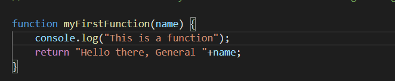
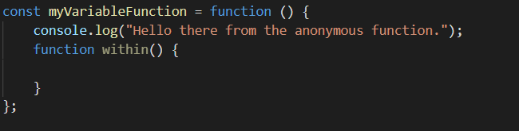
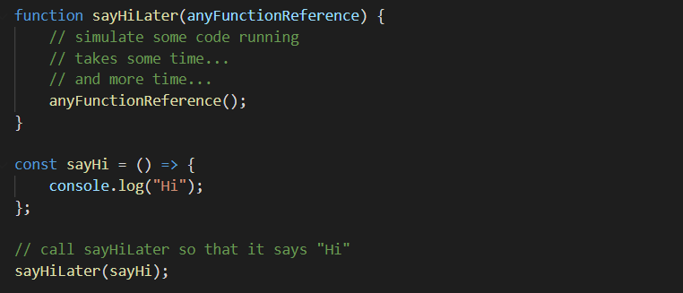
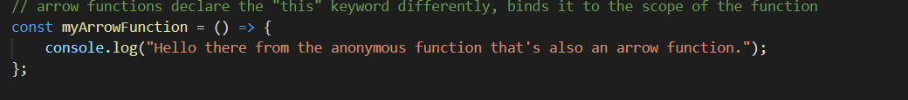

Here functions (methods in Java) have to be denoted with the function keyword. After that we can give them a name and pass arguments to the function. It is possible for it to have no return type(i.e void).
Primitive parameters (such as a number) are passed to functions by value; the value is passed to the function, but if the function changes the value of the parameter, this change is not reflected globally or in the calling function. If you run the example below it will print to the console the number 4 and not 5. To get 4 we can have the function return the number instead. While if you do it for a non-primitive value like an array it will actually show the change on the variable.
let x=4;
function myFunction(number){
number=5;
}
myFunction(x);
console.log(x);You can also save functions within variables or constants but it is better to do so in a constant. This is called a function expression. The function we are passing is actually anonymous we ca give it a name as well so it helps debugging. Function expressions are convenient when passing a function as an argument to another function. Also in the picture below we can see that we can do multiple function within 1 function. These of course only work within the scope of the function they are within. They can access global variables or variables which are scoped within themselves or the higher function.
Function expressions in JavaScript are not hoisted, unlike function declarations. You can't use function expressions before you create them. You can see in the example below.
console.log(notHoisted) // undefined
//even though the variable name is hoisted, the definition isn't. so it's undefined.
notHoisted(); // TypeError: notHoisted is not a function
let notHoisted = function() {
console.log('bar');
};
You can also reference other function within anothers paramethers. In the example given.
Arrow functions have a shorter syntax tha a regular one and do not posses a name and are anonymous.
